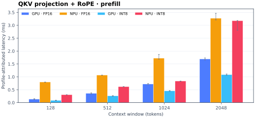
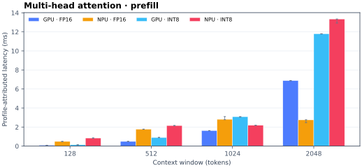
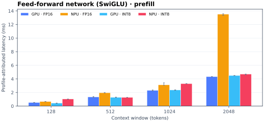
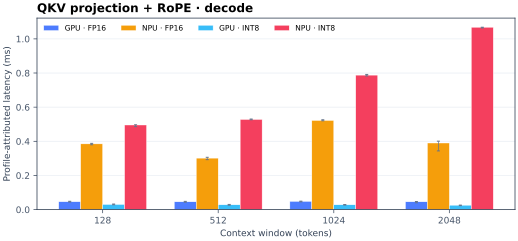
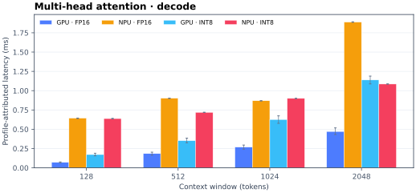
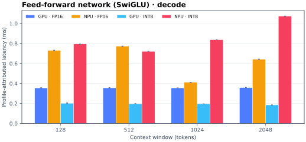
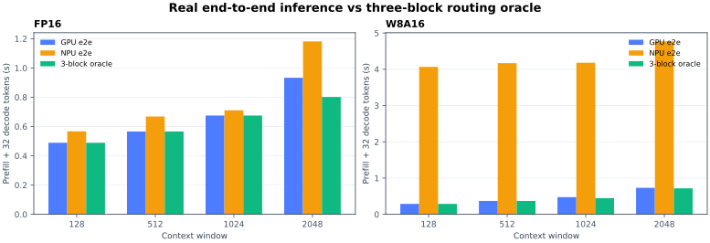

Validated on Panther Lake · 31 August 2026
QKV, attention, or FFN: where does the NPU actually win?
Qwen2.5-0.5B on Intel Xe3 iGPU and NPU 5, FP16 and W8A16, across 128–2048 tokens. Compilation is excluded. Native NPU is compared consistently—no per-operator compiler-path cherry-picking.
The useful NPU case is narrow: long-window attention. At model-block granularity, NPU wins only 4 of 48 shape/precision/stage decisions. Its decisive result is FP16 MHA prefill at W=2048; QKV and most FFN/decode cases favor GPU.
3main model blocks
4 / 48NPU block wins
21 × 7wall trials × profile trials
3×independent anomaly validation
Every main block, every window
The earlier 14-way view was too granular for reliable NPU attribution. These six charts retain only the model-defining blocks: QKV preparation, multi-head attention, and the SwiGLU FFN. Bars are shares of the measured full-graph wall time, not isolated-kernel stopwatch readings.
GPU FP16NPU FP16GPU INT8NPU INT8





Multi-head attention, prefill W=2048 FP16: 2.50× faster than GPU.
QKV projection + RoPE, decode W=2048 W8A16: 41.54× faster than NPU.
| Main block | GPU wins | NPU wins |
|---|---|---|
| QKV projection + RoPE | 16 / 16 | 0 / 16 |
| Multi-head attention | 13 / 16 | 3 / 16 |
| Feed-forward network (SwiGLU) | 15 / 16 | 1 / 16 |
W=2048 FFN spike: checked
Verdict: the NPU long-window slowdown is real; the old gate/up split was over-interpreted.
Three fresh process-level repetitions reproduced a stable 21.38–21.43 ms full-graph latency at W=2048. NPU profile counters are fused and may overlap, so individual gate/up bars cannot be treated as independent wall times. The defensible signal is the aggregate FFN share, which rises to 63.1%.
| Window | Full graph median | Across-process range | FFN profile share | FFN attributed |
|---|---|---|---|---|
| 1024 | 9.666 ms | 9.659–9.671 ms | 32.1% | 3.10 ms |
| 1536 | 12.956 ms | 12.937–12.978 ms | 42.8% | 5.54 ms |
| 1792 | 17.010 ms | 16.970–17.165 ms | 46.8% | 7.95 ms |
| 2048 | 21.423 ms | 21.384–21.434 ms | 63.1% | 13.50 ms |
End-to-end reality vs the three-block oracle
Real inference runs the full model on one backend. The green estimate keeps embedding, final norm, and LM head on GPU; it substitutes NPU only when a displayed main block is faster. It is anchored to measured GPU end-to-end latency and deliberately charges zero handoff cost. Each request is one prefill plus 32 decoded tokens.

| Window | Precision | GPU e2e | NPU e2e | 3-block oracle | Opportunity vs best real |
|---|---|---|---|---|---|
| 128 | FP16 | 489.1 ms | 567.3 ms | 489.1 ms | 0.0% |
| 128 | W8A16 | 287.8 ms | 4.07 s | 287.8 ms | 0.0% |
| 512 | FP16 | 566.2 ms | 668.3 ms | 566.2 ms | 0.0% |
| 512 | W8A16 | 369.4 ms | 4.17 s | 369.0 ms | 0.1% |
| 1024 | FP16 | 675.1 ms | 710.8 ms | 675.1 ms | 0.0% |
| 1024 | W8A16 | 473.5 ms | 4.18 s | 445.8 ms | 5.8% |
| 2048 | FP16 | 932.8 ms | 1.18 s | 802.1 ms | 14.0% |
| 2048 | W8A16 | 730.5 ms | 4.77 s | 718.3 ms | 1.7% |
Problems and caveats
NPU profiling counters can overlap or be fused. The block bars apportion full-graph wall time; they are not independently runnable kernel latencies.
It ignores synchronization, tensor transfer, layout conversion, and recompilation boundaries. Any real scheduler must beat those costs.
Weights are post-training INT8 while activations remain FP16. Results should not be labeled as integer-only execution.
One Qwen2.5-0.5B shape, one NUC16 software stack, static windows, and native NPU. Affinity is not portable without remeasurement.
The profile graph represents one realistic layer plus boundaries; the oracle scales its block shares to the measured 24-layer model, so it is an opportunity estimate.
Compilation is excluded and warm-up is complete, but this page does not claim an energy advantage or account for thermal drift across machines.